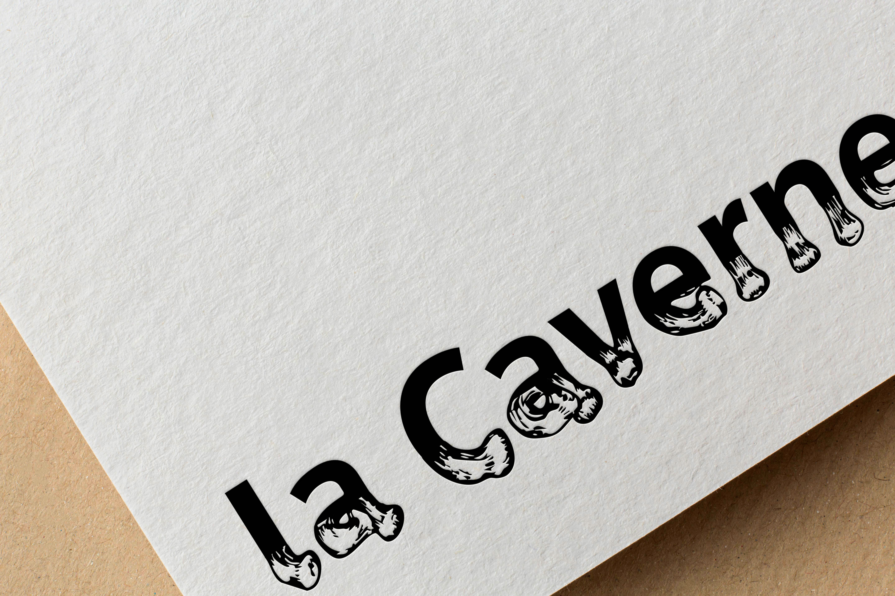
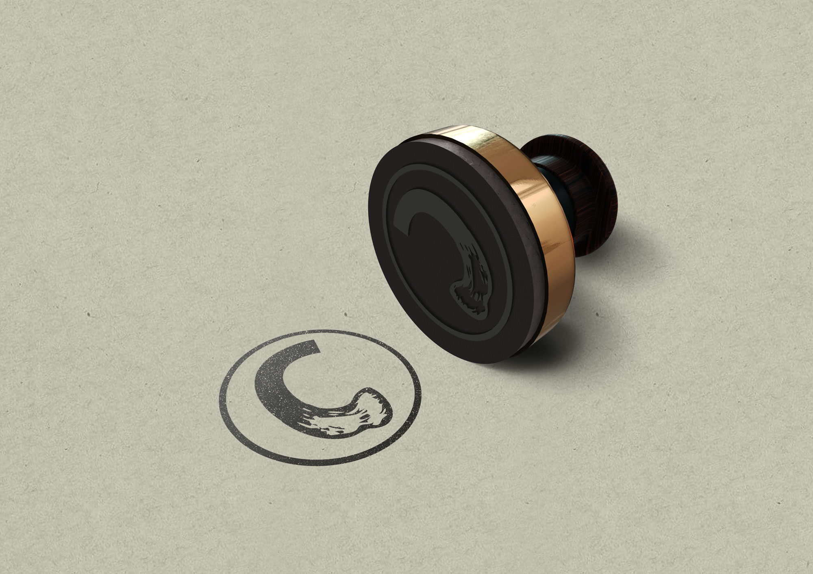
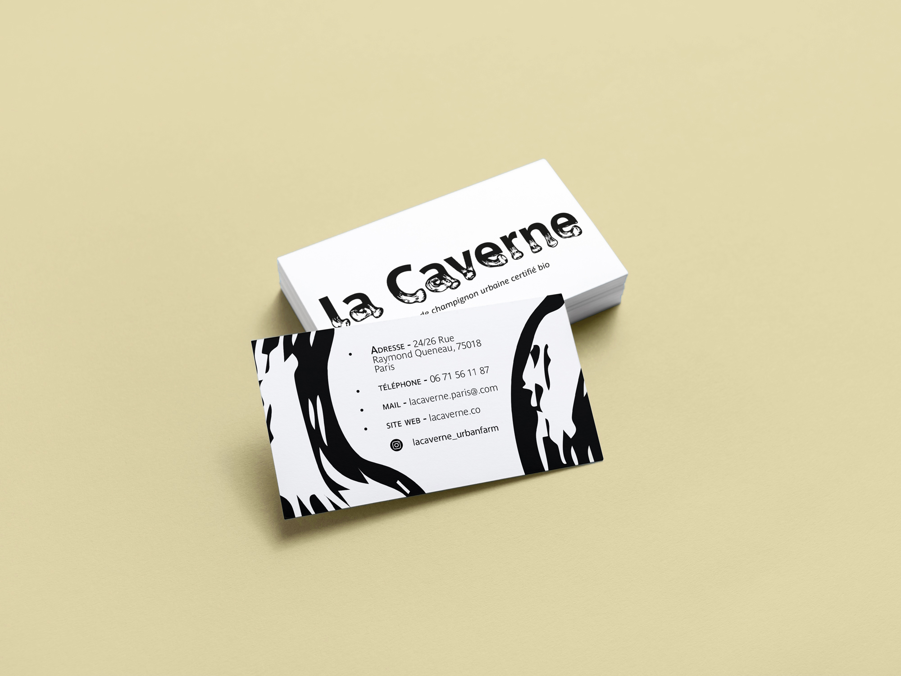
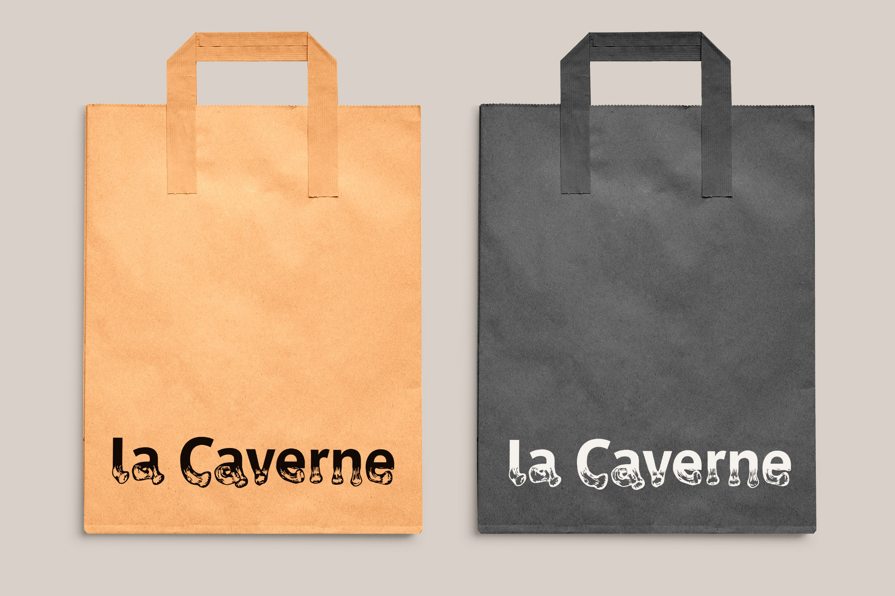
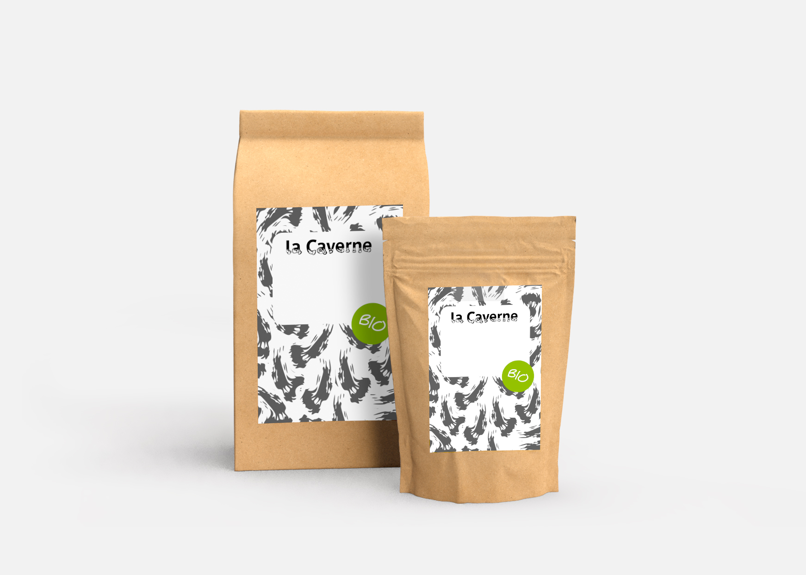
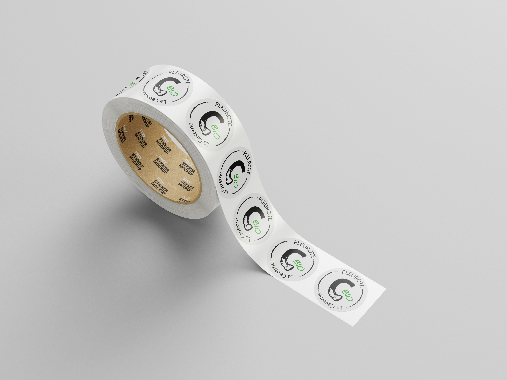
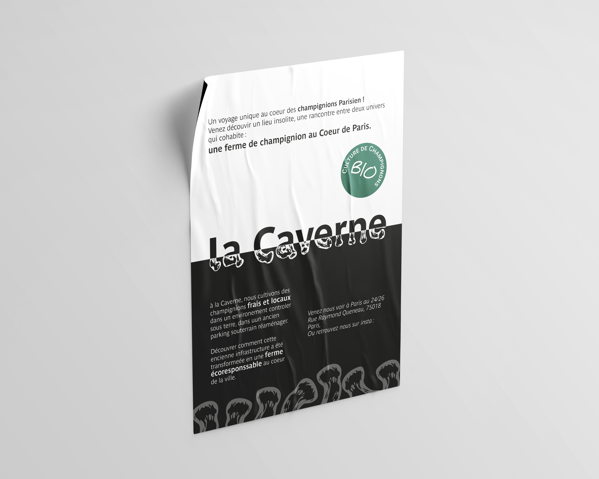

La mission consiste à concevoir une identité graphique pour La Caverne, une champignonnière installée dans un ancien parking souterrain au cœur de Paris.
J’ai décidé de mettre en avant l'aspect insolite du lieu en jouant sur l’interaction entre le monde urbain et le monde souterrain. Pour représenter cette interaction, j’ai fusionné deux typographies : sur la partie supérieure, j’ai choisi la typographie Parisine, utilisée dans la signalétique des transports parisiens, pour évoquer la localité de la Caverne. La partie inférieure des caractères, l’idée d’un lieu souterrain sous Paris, inspirée des pieds de champignons, rappelle les produits vendus par la Caverne. Ainsi, cette fusion entre deux typographies qui s'opposent par leur dessin, symbolise l’harmonie entre deux mondes : le naturel et l’urbain.
Une identité noir et blanc rappelant une certaine économie de moyen allant parfaitement avec des valeurs écoresponsables, naturelles et sans artifice. Et permettant de se démarquer de ces concurrents.
L’identité se déploie dans une logique de cohérence et de responsabilité. Sachets kraft biodégradable, cagettes recyclables valorisent une production locale et artisanale. Les étiquettes structurent le système : les pastilles circulaires scellent et synthétisent l’information et les formats plus larges intègrent un espace pour une écriture manuscrite, soulignant le circuit court et l’adaptabilité.






